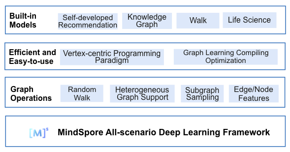
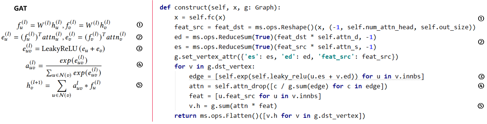

MindSpore Graph Learning Documents
MindSpore Graph Learning is a graph learning suite, which supports point-centered programming for graph neural networks and efficient training inference.
Thanks to the MindSpore graph kernel fusion, MindSpore Graph Learning can optimize the build of execution patterns specific to graph models, helping developers shorten the training time. MindSpore Graph Learning also proposes an innovative vertex-centric programming paradigm, which provides native graph neural network expressions and built-in models covering most application scenarios, enabling developers to easily build graph neural networks.
{kind=link}
Code repository address: <https://gitee.com/mindspore/graphlearning>
Design Features
Vertex-centric programming paradigm
A graph neural network model transfers and aggregates information on a given graph structure, which cannot be intuitively expressed through entire graph computing. MindSpore Graph Learning provides a vertex-centric programming paradigm that better complies with the graph learning algorithm logic and Python language style. It can directly translate formulas into code, reducing the gap between algorithm design and implementation.
Accelerated graph models
MindSpore Graph Learning combines the features of MindSpore graph kernel fusion and auto kernel generator (AKG) to automatically identify the specific execution pattern of graph neural network tasks for fusion and kernel-level optimization, covering the fusion of existing operators and new combined operators in the existing framework. The performance is improved by 3 to 4 times compared with that of the existing popular frameworks.
Training Process
MindSpore Graph Learning provides abundant dataset read, graph operation, and network module APIs. To train graph neural networks, perform the following steps:
Define a network model. You can directly call the API provided by mindspore_gl.nn or define your own graph learning model by referring to the implementation of mindspore_gl.nn.
Define a loss function.
Construct a dataset. mindspore_gl.dataset provides the function of reading and constructing some public datasets for research.
Train and validate the network.
Feature Introduction
MindSpore Graph Learning provides a node-centric GNN programming paradigm. Its built-in code parsing functions translate node-centric computing expressions into graph data computing operations. To facilitate debugging, a translation comparison between the user input code and the calculation code is printed during the parsing process.
The following figure shows the implementation of the classic GAT network based on the node-centric programming model. A user defines a function that uses node v as the input parameter. In the function, the user obtains the neighboring node list through v.innbs(). Traverse each neighboring node u to obtain node features, and calculate feature interaction between the neighboring node and the central node to obtain a weight list of neighboring edges. Then, the weights of neighboring edges and neighboring nodes are weighted averaged, and the updated central node features are returned.
{kind=link}
Future Roadmap
The initial version of MindSpore Graph Learning includes the point-centric programming paradigm, provides implementation of typical graph models, and provides cases and performance evaluation for single-node training on small datasets. The initial version does not support performance evaluation and distributed training on large datasets, and does not support interconnection with graph databases. These features will be included in later versions of MindSpore Graph Learning.
Typical MindSpore Graph Learning Application Scenarios
Deployment
Guide
API References
References
RELEASE NOTES